SalmoSonar Visión
datasets · videos · predicciones · atención
Datasets /
Salmon Detection, Chinook (Roboflow)
Otra especie de salmón; sirve para probar si el detector generaliza.
- Dominio
- Salmón Chinook, cajas de pez completo (40 imágenes)
- Formato
- YOLO cajas
- Clases
- Chinook
- Aquí
- completo · 40 imágenes · 43 objetos
- Licencia
- CC BY 4.0
- Cita
- Salmon Detection dataset, Roboflow Universe (capstone-project)
Archivos de la fuente
- README.dataset.txt 158 Bytes
- README.roboflow.txt 993 Bytes
- data.yaml 286 Bytes
Corridas sobre este dataset
| Corrida | Dataset | Modelo | Imágenes | Precisión | Recall | F1 | IoU medio | Error puntos |
|---|---|---|---|---|---|---|---|---|
| peces_obb-chinook-todo 2026-11-10 15:42 |
chinook | best.pt | 40 | 43,6 % | 39,5 % | 41,5 % | 0,76 | – |
Todas
40 imágenes

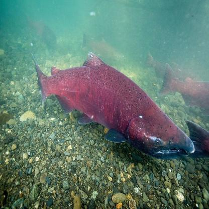
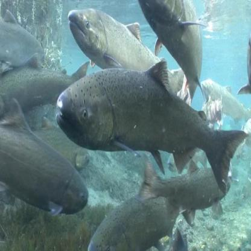
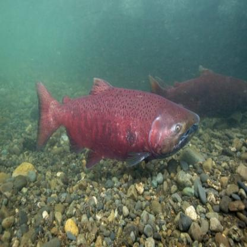
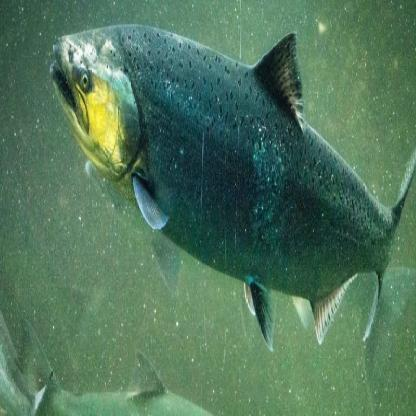
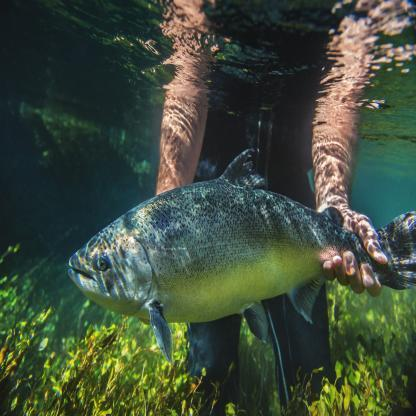
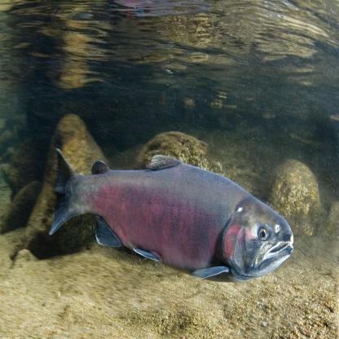
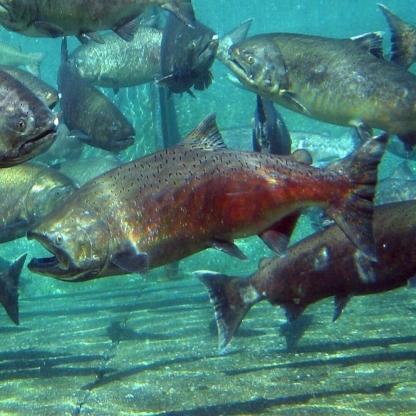
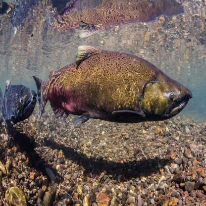
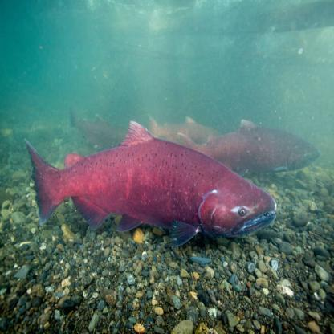
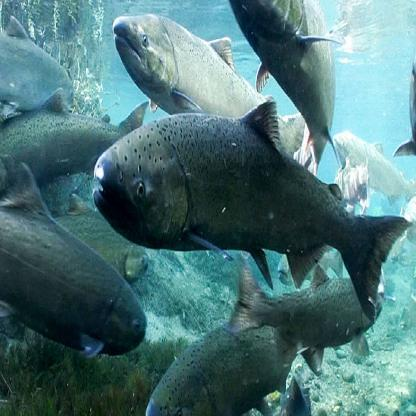
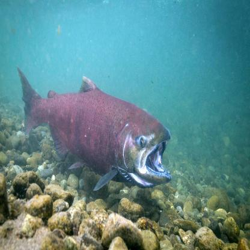